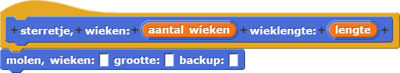

Remix Je Molen
molenblok,
sterretje en veelhoekblokken maken.
Je kan je bestaande molenstappenplan gebruiken om andere, makkelijkere speciale stappenplannen te maken die ieder een bepaald nut hebben.

- Als het nog niet openstaat, open je H1L3-Molen project van de vorige pagina.
- Gebruik je
molenblok om een meer gespecialiseerdmolenblok te maken.- Als eerst, maak een nieuw
sterretjemet twee variabelen: een voor het aantal wieken en een voor de lengte van iedere wiek. Je kan hier terugzien hoe je een blok maakt: Hoofdstuk 1 Les 2 Pagina 3: Maak je eigen blok. 
- Vul nu de 3 tekstvlakken in in je
molenzodat het een sterretje maakt.
- Als eerst, maak een nieuw
- Op een soortgelijke manier, maak een
veelhoekblok dat demolengebruikt en door de goede waardes in te vullen een veelhoek tekent met een gegeven aantal zijdes met een gegeven lengte.
Een blok gebruiken wat je voor een ander doeleind al eerder hebt gebruikt is een voorbeeld van
abstractie. Abstractie is een van de meest belangrijke ideeën in het vak informatica,
maar het heeft geen simpele definitie. In deze context betekent abstractie het gebruiken van een
algemeen blok (molen) om twee meer specifieke blokken te maken (sterretje en
veelhoek). Er zijn nog veel andere varianten van abstractie, maar we zullen ze aangeven als
ze langskomen.
In de tussentijd, als je een stuk script wil kopiëren van een stuk naar een ander, overweeg abstraheren door een algemeen blok te schrijven.
- Als je kijkt naar je
molenen als je kijkt naar hoe je deze gebruikt in jeveelhoek, zie je dat er stappen zijn die je niet echt nodig hebt als je een veelhoek maakt. Maak nog een versie van jeveelhoekgebouwd op primitieve blokken (move,turnenzovoort). Hoe simpel kan je hem maken?
- Gebruik je
molenblok nog een keer om eencirkelblok te maken dat een waarde kan aannemen voor de grootte. - Gebruik het
willekeurig getalblok samen metmaak penkleurenmaak pengrootteom een paar vormen te tekenen.

- Uitdaging: Maak een script dat een blauw vierkant tekent met een grootte van 100
en daarna een rode cirkel tekent die precies in het vierkant past.

- In elke puzzel hier beneden zul je een stukje code moeten schrijven die een auto van het startpunt
(A) tot het eindpunt kan laten rijden. Klik op de fotos om het bijbehorende Snap! project
te laden.